Projects
This page showcases my work across Android, AR/VR, and other software and academic projects.
Jump to Project
OfficeMeter (Android)| Amsterdam (Android)| BookExplorer (Android)| 30 Days of Vocabulary (Android)| Water Me (Android)| GreenHouse Demo (VR)| AURaPath (AR)| Backgammon VR (VR)| VR Room (VR)
Android
OfficeMeter
OfficeMeter helps users track and plan office attendance based on a company’s weekly work policy. Users can set how many days per week they are expected to attend the office, choose their regular workdays, and monitor monthly attendance requirements. This is a personal product project, and version 3 has already been released with more updates planned.
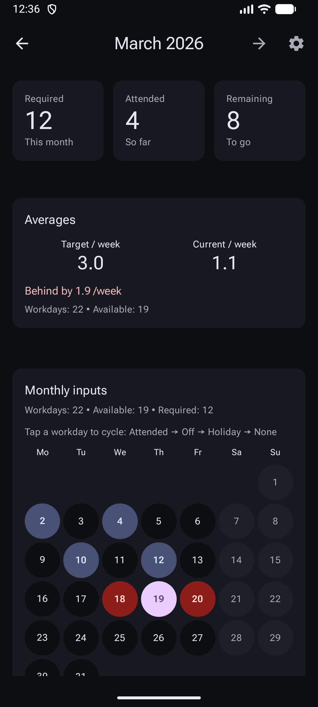
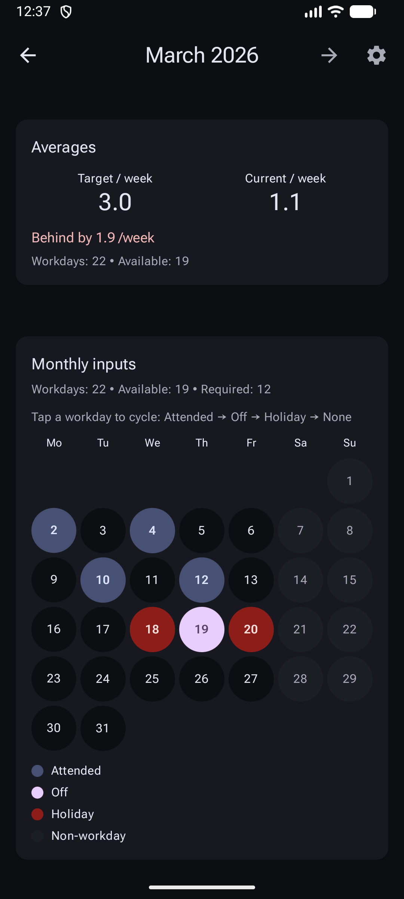
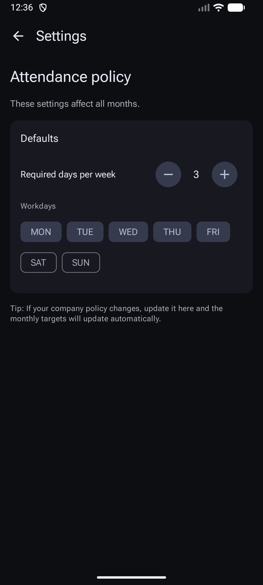
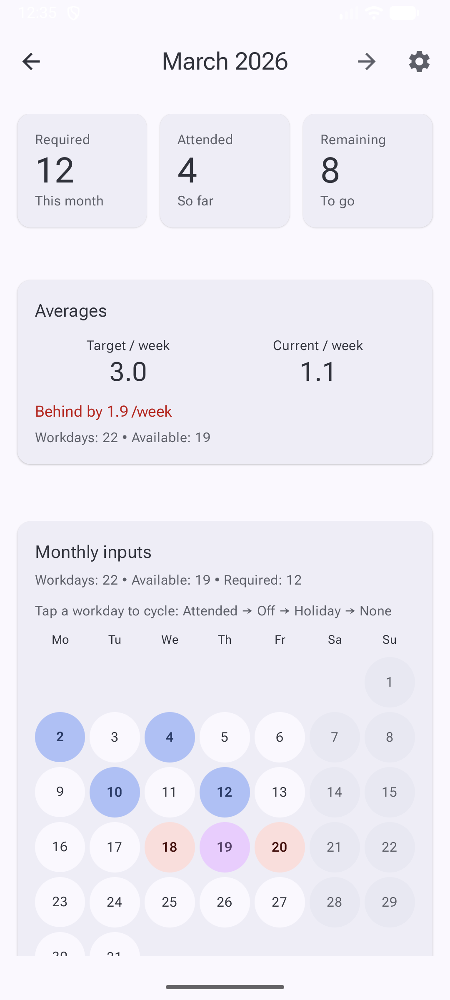
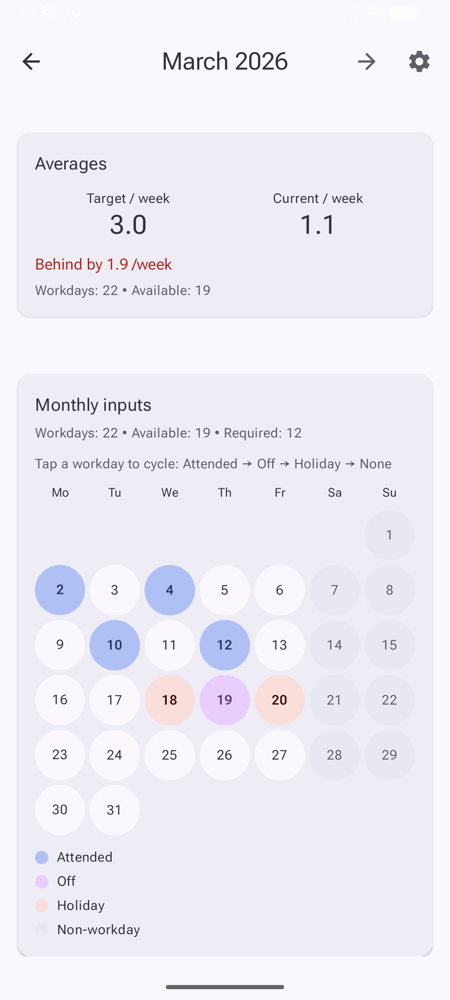
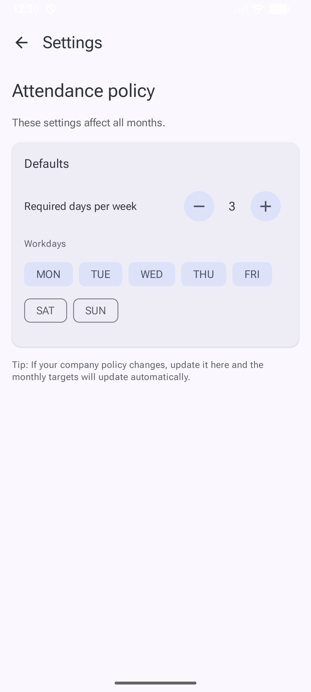
GitHub: Private
Google Play: View on Google Play
Amsterdam
An Android app showcasing places to visit in Amsterdam across five unique categories. Built with Jetpack Compose, Material Design, and modern Android architecture, the app focuses on a clean adaptive user experience. The original city-app idea came from a training project, but this version was developed as a complete app project.

GitHub: View Repository
BookExplorer
An Android app for discovering, saving, and tracking books to read. While the initial idea was inspired by codelabs, I extended it with additional features to make it a more complete and distinct application.
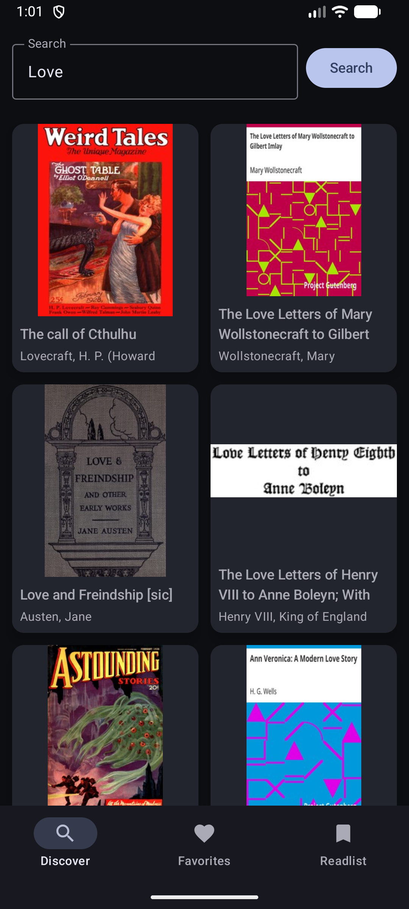
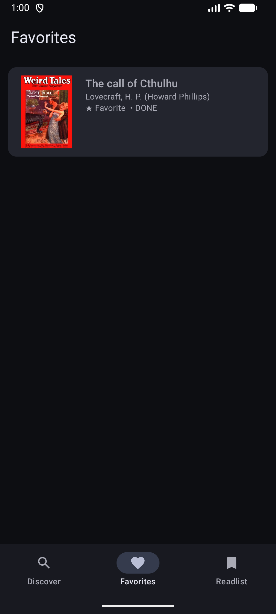
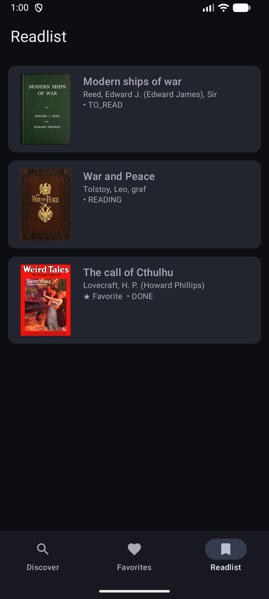
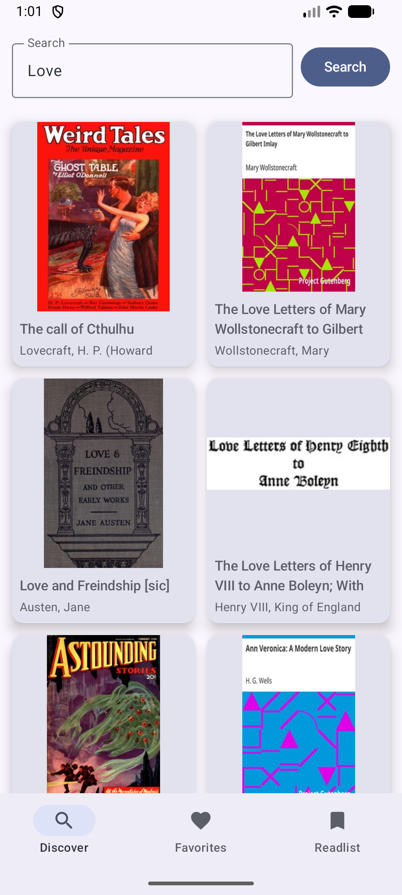
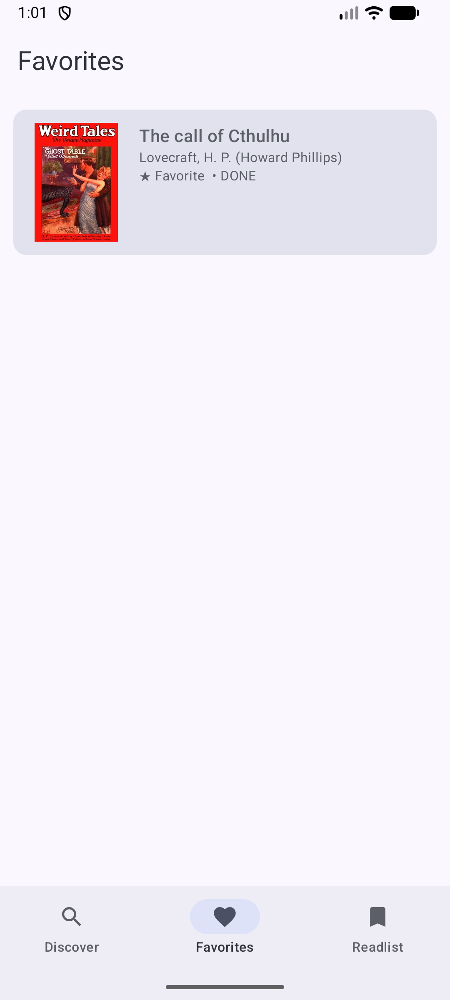
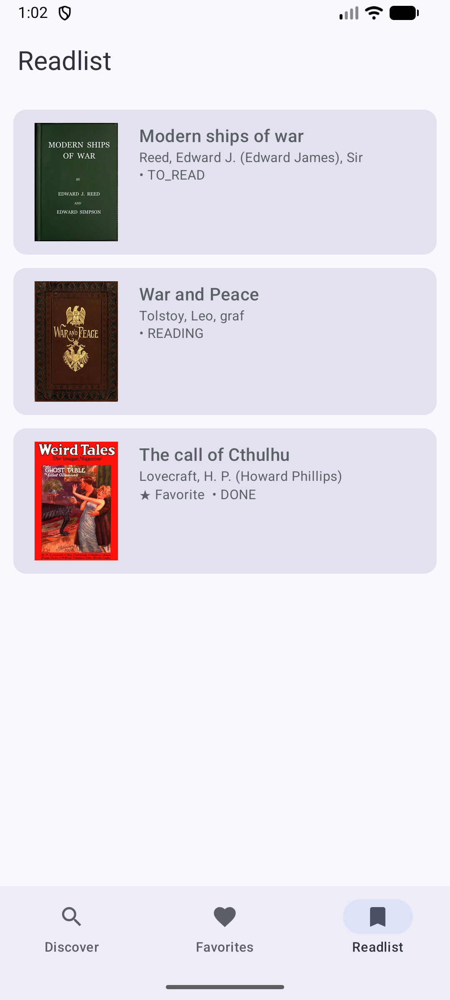
GitHub: View Repository
30 Days of Vocabulary
An Android app that presents 30 words together with their definitions and examples, designed as a simple daily vocabulary learning experience. The 30-day structure was inspired by a Jetpack Compose training project.

GitHub: View Repository
Water Me
An Android app that displays a list of plants and allows users to set reminders for watering them. After a chosen time duration, the app can display a reminder notification. This project was built while learning Android background work and notifications.
GitHub: View Repository
AR/VR
GreenHouse Demo
A professional VR prototype developed for greenhouse monitoring and visualization. The system allows users to explore a virtual greenhouse environment and inspect plant health data, environmental metrics, and operational tasks. Some implementation details remain private.
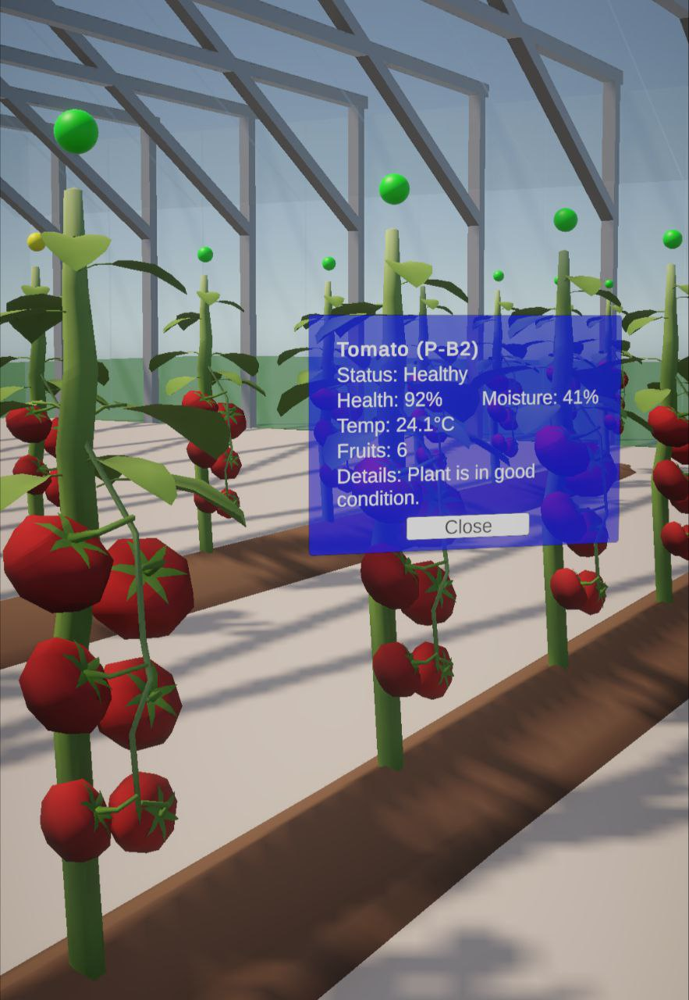
AURaPath — AR Waypoint Determination for UR10 Robots
An augmented reality system for spatial waypoint determination, digital twin preview, and trajectory execution on a physical Universal Robots UR10 collaborative robot using Microsoft HoloLens 2. This project was developed at the Autonomous Intelligent Robotic Center (AIRC) at the University of Windsor.
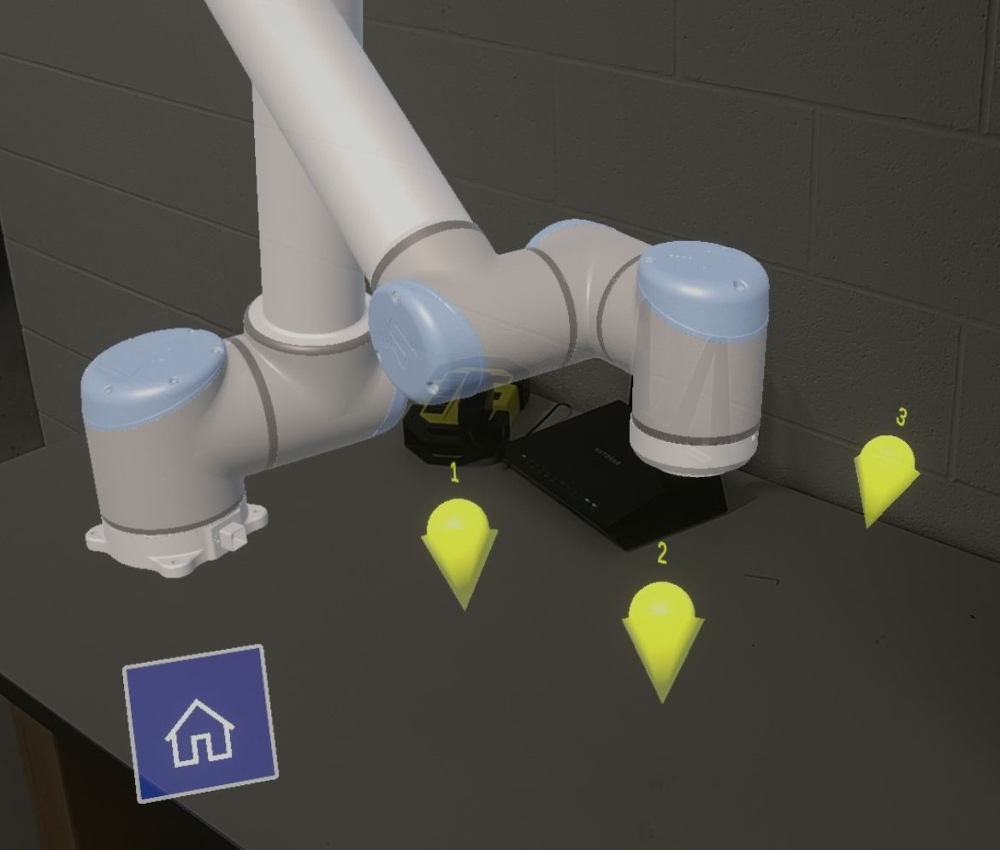
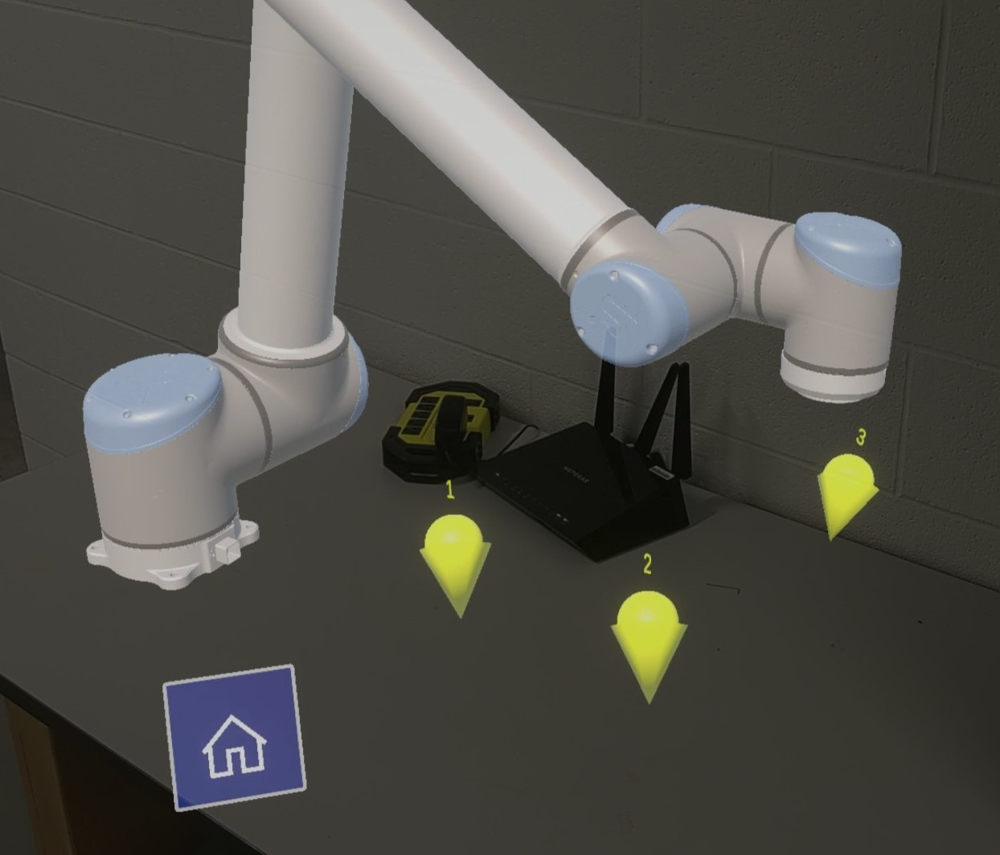
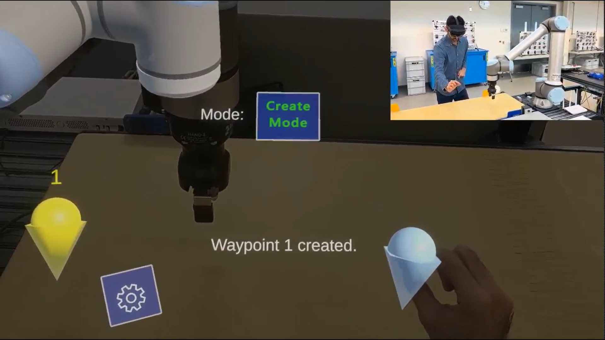
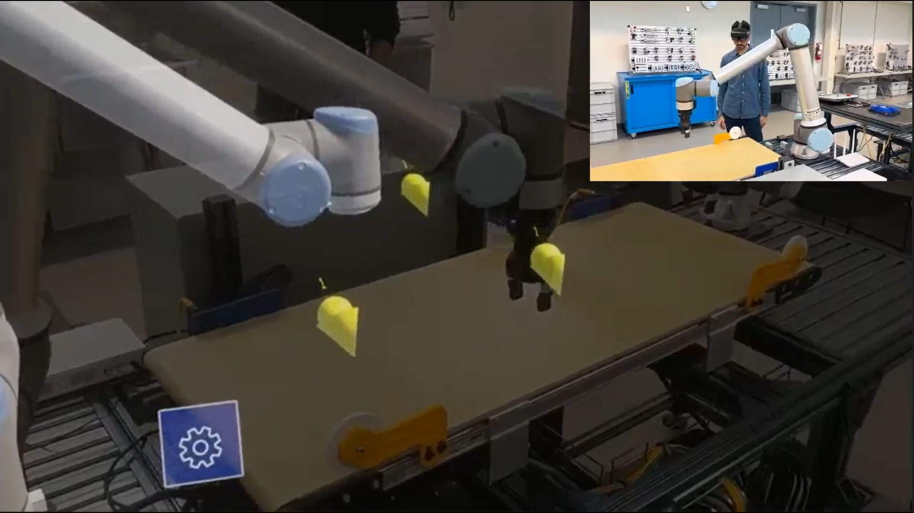
GitHub: View Repository
Backgammon VR
A virtual reality backgammon game where two players can play together in a shared immersive environment. Built for 6DoF headsets with grab interactions, dice physics, and socket-based movement. This is a personal project currently under development.
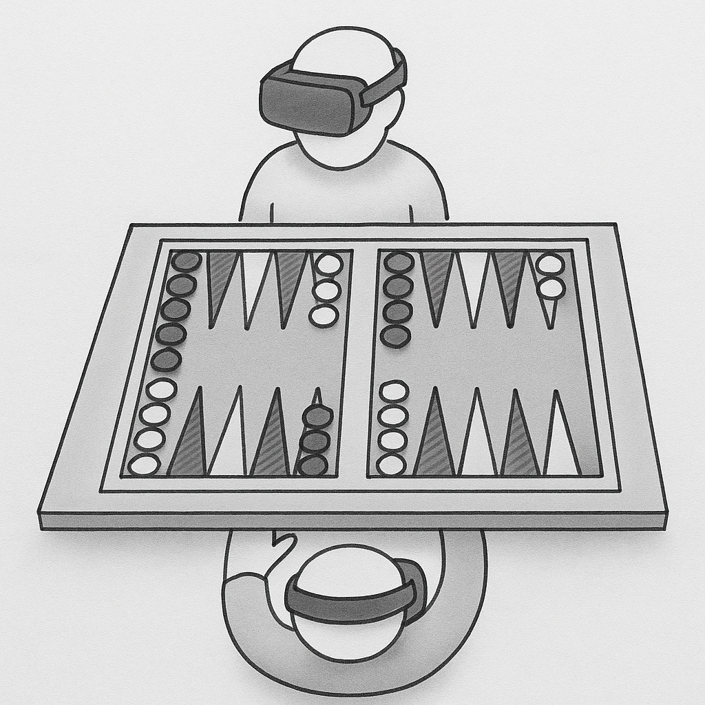

GitHub: View Repository
VR Room
My first exploration into virtual reality development using Unity. This interactive VR environment allows users to experience a spatial room with natural interaction using hand tracking and VR controls. The project started as part of the Unity Learn VR Development pathway and is currently still in progress.

GitHub: View Repository
Other Software / University / AI
- Other projects will be added here.